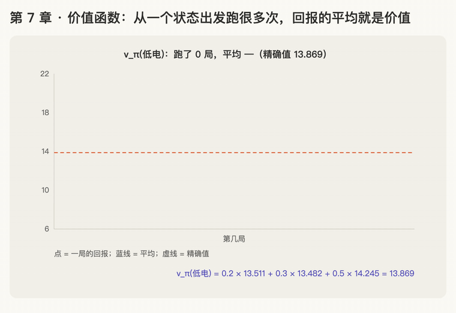

第 7 章 · 价值函数 value function：v_π(s) 和 q_π(s, a)
本章回答：一个状态"好不好"怎么用一个数说清楚？在某个状态先做某个动作，又值多少？这两个数之间什么关系？
讲解日期：2026-11-13 · 上一章：第 6 章 策略 · 下一章：第 8 章 Bellman 期望方程
对应原文：Sutton & Barto §3.5（L4234–L4303，式 3.12、3.13）；CS 285 第 4 讲（lec-04.txtL167–L178 Definition: Q-function / value function）
本章缩写：v = value（价值），\(v_\pi\) 读"v 下标 π"；q = quality（质量；书里叫 action-value 动作价值），Q-function 就是 q；\(\mathbb{E}_\pi[\cdot \mid \cdot]\) 见第 4、6 章。全部缩写见 附录 · 缩写与术语表
讲解
第一步：状态价值 \(v_\pi(s)\)：从这里出发，平均能拿多少回报（2026-11-13）
问题：机器人"高电"和"低电"，哪个状态更好？好多少？
只看下一步的奖励不够（第 6 章第三步末尾：充电当下拿 0，但以后能拿更多）。要看从这个状态出发，往后一路的回报。但回报是随机的（策略掷骰子、环境掷骰子），所以取平均，也就是期望。
状态价值 state-value（式 3.12，L4251–L4260）：
一个个符号读：
- \(G_t\)：从第 t 步往后的折扣回报（第 3 章）；
- \(\mid S_t = s\)：在"现在处于 s"的条件下（第 4 章第四步）；
- \(\mathbb{E}_\pi\)：按策略 π 行事时的平均（第 6 章）；
- 合起来：从 s 出发、之后一直按 π 走，平均能拿多少折扣回报。
类比：房价。 一套房子值多少，不看它今天能收多少租金，而是看以后能一直收多少（打个折加起来）。价值函数就是给每个状态估"房价"。
两点要记住：
- 价值和策略绑在一起：同一个状态，换一份策略，价值就变了。所以下标写着 π；
- 终止状态的价值永远是 0（L4264–L4265）：结束了，后面再没有奖励。
一句话：\(v_\pi(s)\) = 从 s 出发、按 π 一直走下去，折扣回报的平均值；状态的"房价"。
第二步：用"多跑几次取平均"估出价值（2026-11-13）
问题：\(v_\pi(\text{高电})\) 具体是多少？
最直接的办法（第 4 章第三步）：从高电出发，按策略跑很多次，每次记下折扣回报，最后取平均。原文 L4285–L4296 说：这样的平均会收敛到真正的价值，这类方法叫蒙特卡洛 Monte Carlo 方法（第 14 章专门讲；Monte Carlo 是摩纳哥的赌城，名字取"靠随机试"的意思）。
用代码从每个状态跑了 2000 次（γ = 0.9，策略是第 6 章那份，每次截到 100 步：\(0.9^{100}\) 约 0.00003，后面的奖励几乎不影响）：
| 状态 | 2000 次回报的平均 ≈ \(v_\pi\) |
|---|---|
| 高电 | 15.84 |
| 低电 | 13.89 |
读这两个数：高电比低电值钱，大约多 2。为什么？低电时有 30% 搜索风险（被罚 −3），而且充电要花一步拿 0。
大小怎么理解：第 3 章说每步 +1 的回报是 \(\frac{1}{1-0.9} = 10\)。高电时平均每步拿将近 1.6 左右，乘上"看 10 步"，就是 16 上下。数量级对得上。
一句话：不知道公式时，从 s 出发多跑几次、把折扣回报取平均，就估出了 \(v_\pi(s)\)。
第三步：动作价值 \(q_\pi(s, a)\)：先做 a，再按 π 走（2026-11-13）
问题：机器人低电时，"充电"和"搜索"哪个更好？\(v_\pi\) 回答不了：它是按策略掷骰子以后的平均，混在一起了。
动作价值 action-value（式 3.13，L4266–L4278）：
和 \(v_\pi\) 只差一个条件：第一步固定做 a，之后再按 π 走。
估出来（同样跑 2000 次，只是第一步强制做那个动作）：
| 估计值 | |
|---|---|
| \(q_\pi(\text{低电}, \text{充电})\) | 14.22 |
| \(q_\pi(\text{低电}, \text{搜索})\) | 13.46 |
所以低电时先充电比先搜索好（14.22 > 13.46），虽然充电当下拿 0、搜索当下平均拿 0.5。价值把"以后"也算进来了。
q 的好处：有了 q，挑动作只要看哪个 q 最大，不用知道环境的 p。这就是后面 Q-learning（第 16 章）、DQN（第 18 章）里那个 Q 的来历。
一句话：\(q_\pi(s, a)\) = 先做 a、再按 π 走的平均回报；比较同一状态下各动作的 q，就知道哪个动作更好。
第四步：v 和 q 的关系：v 是按 π 对 q 的加权平均（2026-11-13）
问题：\(v_\pi(\text{低电})\) 和三个 \(q_\pi(\text{低电}, \cdot)\) 有什么关系？
想一想：在低电时按 π 行事，就是 20% 先搜索、30% 先等待、50% 先充电，然后都按 π 走下去。每种开头的平均回报正好是对应的 q。所以：
又是第 4 章的"值 × 概率再相加"。
用精确值验证（第 8 章教怎么精确算；先拿结果来看）：
| 动作 | \(\pi(a \mid \text{低电})\) | \(q_\pi(\text{低电}, a)\) | 乘积 |
|---|---|---|---|
| 搜索 | 0.2 | 13.511 | 2.702 |
| 等待 | 0.3 | 13.482 | 4.045 |
| 充电 | 0.5 | 14.245 | 7.122 |
| 合计 | 13.869 |
精确的 \(v_\pi(\text{低电}) = 13.869\)，和第二步跑出来的 13.89 很接近（差一点是随机误差）。
反过来，q 也能用 v 写出来：先做 a，环境给出 r 和 s'，之后从 s' 按 π 走，平均就是 \(v_\pi(s')\)：
例：\(q_\pi(\text{低电}, \text{充电}) = 1 \times [0 + 0.9 \times 15.828] = 14.245\)（充电一定到高电、奖励 0）。
这两个式子一接，就是第 8 章的 Bellman 方程。
一句话：v 是按 π 对 q 的加权平均；q 是"这一步的奖励 + γ × 下一个状态的 v"的平均。
动画演示：从一个状态出发跑很多次，回报的平均就是价值

可交互版：animations/l07-value.html（要能点按钮、拖滑块，需要用本地服务打开，见 animations/README.md"跑起来看"）。
怎么看：
- 每帧从"低电"出发按策略跑一局（截到 60 步），记下这一局的折扣回报（一个点）；
- 横线是到目前为止所有点的平均，慢慢稳在 \(v_\pi(\text{低电}) \approx 13.9\) 附近（第二步）；
- 切换"第一步固定"按钮：固定先充电或先搜索，平均分别靠向 \(q_\pi\) 的两个值（第三步）；
- 右下角显示 \(\sum_a \pi(a \mid s)\,q_\pi(s, a)\) 的加权，和 \(v_\pi\) 对上（第四步）。
练习与作答记录
题 1：用自己的话说出 \(v_\pi(s)\) 和 \(q_\pi(s, a)\) 的区别（提示：第一步谁说了算）。
作答：（待作答）
题 2：某状态有两个动作，\(\pi\) 各选 0.5，\(q_\pi\) 分别是 10 和 4。\(v_\pi\) 是多少？如果策略改成第一个动作选 0.9，\(v_\pi\) 变成多少？
作答：（待作答）
题 3：\(v_\pi(\text{高电}) = 15.828\)，γ = 0.9。高电时"等待"一定拿 +1、留在高电。用第四步第二个式子算 \(q_\pi(\text{高电}, \text{等待})\)。
作答：（待作答）
口诀
价值是房价：从这出发按 π 走，折扣回报的平均；
q 先做 a 再按 π，挑动作只看 q；
v 是 q 按 π 的平均，q 是"眼前 + γ × 下一个 v"的平均；
不会算就多跑几次取平均。
本章复习卡片
- R11（\(v_\pi(s) = \mathbb{E}_\pi[G_t \mid S_t = s]\) 与 \(q_\pi(s, a)\) 的定义和区别）
- R12（\(v_\pi(s) = \sum_a \pi(a \mid s) q_\pi(s, a)\)；\(q_\pi(s, a) = \sum p\,[r + \gamma v_\pi(s')]\)）
附录 · 延伸阅读
留给以后深入学习用，不影响本章主线。★ 是建议先读的。L 行号指
materials/text/books/sutton-barto-RLbook2020.txt。
推荐阅读
| 读什么 | 读哪里 | 读它为了什么 |
|---|---|---|
| ★ Sutton & Barto §3.5 | L4234–L4303（式 3.12、3.13） | 本章原文：价值、动作价值，以及"用平均来估"的蒙特卡洛思想（L4285–L4303） |
| Sutton & Barto 习题 3.12、3.13 | L4279–L4284 | 正好是第四步的两个式子：v 用 q 和 π 写、q 用 v 和 p 写 |
| ★ CS 285 第 4 讲 | lec-04.txt L167–L178 |
课程版的 Q-function、value function 定义，以及"怎么用它们改策略" |
| Spinning Up "Key Concepts" | spinningup/docs/spinningup/rl_intro.rst 的 Value Functions 一节 |
四种价值函数（\(V^\pi, Q^\pi, V^*, Q^*\)）的统一记号 |
| 王树森 slides | chinese/wangshusen-DRL/Slides/1_Basics_2.pdf |
中文：动作价值、状态价值 |
数学原理
- 价值是条件期望：\(v_\pi(s) = \mathbb{E}_\pi[\sum_{k=0}^{\infty}\gamma^k R_{t+k+1} \mid S_t = s]\)，与 t 无关（马尔可夫 + 策略固定，从哪一步开始算都一样）。
- 全期望公式（第 4 章附录）：按第一个动作分组，\(v_\pi(s) = \sum_a \Pr(A_t = a \mid s)\,\mathbb{E}[G_t \mid s, a] = \sum_a \pi(a \mid s)\,q_\pi(s, a)\)。
- 一步展开：\(q_\pi(s, a) = \mathbb{E}[R_{t+1} + \gamma G_{t+1} \mid s, a]\)，用第 3 章的递推，再把 \(\mathbb{E}[G_{t+1} \mid S_{t+1} = s']\) 换成 \(v_\pi(s')\)（马尔可夫性质保证可以这样换）。
- 蒙特卡洛误差：n 次平均的误差约 \(\sigma / \sqrt n\)；2000 次时误差在 0.1 量级，所以 13.89 和 13.869 差 0.02 正常。
公式清单
| 公式 | 意思 |
|---|---|
| \(v_\pi(s) = \mathbb{E}_\pi[G_t \mid S_t = s]\) | 状态价值（式 3.12） |
| \(q_\pi(s, a) = \mathbb{E}_\pi[G_t \mid S_t = s, A_t = a]\) | 动作价值（式 3.13） |
| \(v_\pi(s) = \sum_a \pi(a \mid s)\,q_\pi(s, a)\) | v 由 q 加权得到（习题 3.12） |
| \(q_\pi(s, a) = \sum_{s', r} p(s', r \mid s, a)[r + \gamma v_\pi(s')]\) | q 由 v 得到（习题 3.13） |
| \(v_\pi(\text{终止}) = 0\) | 结束后没有奖励 |
代码对照：把本章的数字用代码算一遍
代码在
cs285-deep-rl/solutions/chapter-code/ch07_value.py，测试tests/test_ch05_09.py。
同一章的 Jupyter notebook：cs285-deep-rl/solutions/chapter-code/notebooks/ch07_value.ipynb（讲解和代码放在一起，一格一格边读边跑；代码都写在格子里，Colab 也能直接打开）。
bash cd cs285-deep-rl/solutions/chapter-code uv run python ch07_value.py
| 讲义 | 代码 | 跑出来 |
|---|---|---|
| 跑 2000 次估 \(v_\pi\) | mc_value(P, pi, s) |
高电 15.84，低电 13.89 |
| 第一步固定估 \(q_\pi\) | mc_value(P, pi, 1, first_action=2) / =0 |
充电 14.22，搜索 13.46 |
| 精确值（第 8 章） | ch08_bellman.solve_v、q_from_v |
13.869、14.245、13.511 |
关键几行：
for t in range(horizon):
a = first_action if (t == 0 and first_action is not None) else sample_action(pi, s, rng)
s, r = step(P, s, a, rng) # 环境掷骰子
G += disc * r; disc *= gamma # 一边走一边累计折扣回报
代码里才看得到的：持续任务没有终点，代码只能"截到 100 步"。因为 \(0.9^{100} \approx 3 \times 10^{-5}\)，截掉的部分最多影响 \(2 \times 3\times10^{-5} / 0.1 \approx 0.0005\)，可以忽略。γ 越接近 1，要截的步数越多。